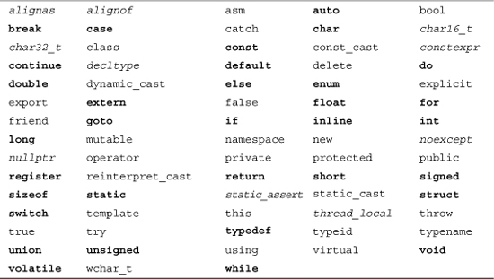
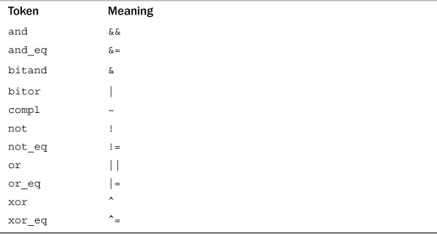

C++ reserves some words for its own use and for use in C++ libraries. You shouldn’t use a reserved word as an identifier in a declaration. Reserved words come in three categories: keywords, alternative tokens, and C++ library reserved names.
Keywords are identifiers that form the vocabulary of a programming language. They may not be used for other purposes, such as serving as variable names. Table B.1 shows C++’s keywords. Keywords shown in boldface are also keywords in ANSI C99. Keywords in italics are C++11 additions.

In addition to keywords, C++ has some alphabetic alternative representations of operators, termed alternative tokens. These, too, are reserved. Table B.2 lists the alphabetic alternative tokens and the operators they represent.
Table B.2. C++ Reserved Alternative Tokens and Their Meanings

The compiler won’t let you use keywords and alternative tokens as names. There’s another class of forbidden names for which the protection is not as absolute—reserved names, which are names reserved for use by the C++ library. If you use one of these as an identifier, the effect is undefined. That is, it might generate a compiler error, it might generate a warning, it might cause a program to run incorrectly, or it might cause no problems at all.
The C++ language reserves macro names used in a library header file. If a program includes a particular header file, then you shouldn’t use the names of macros defined in that header (or in headers included by that header file, and so on) for other purposes. For example, if you include the header file <climits> directly or indirectly, you shouldn’t use CHAR_BIT as an identifier because that name is already used as a macro in that header file.
The C++ language reserves names beginning with two underscores or a single underscore followed by an uppercase letter for any use, and it reserves names beginning with a single underscore for use as a global variable. So don’t create names such as __gink or __Lynx in any case and names such as _lynx in the global namespace.
The C++ language reserves names declared with external linkage in library header files. For functions, this includes the function signature (name and parameter list). For example, suppose you have this code:
#include <cmath>
using namespace std;
In this case, the function signature tan(double) is reserved. That means your program should not declare a function that has this prototype:
int tan(double); // don't do it
This doesn’t match the library tan() prototype, which returns type double, but it does match the signature portion. However, it would be okay to have the following prototype:
char * tan(char *); // ok
That’s because even though it matches the tan() identifier, it doesn’t match the signature.
The C++ community is loath to add new keywords because they could conflict with existing code. That is why the standards committee has, for example, repurposed the auto keyword and provided more than one use for others, such as virtual and delete. C++11 has implemented another way to avoid adding keywords, and that is to use identifiers with special meanings. These identifiers, override and final, are not keywords, but they are used to implement language features. The compiler uses the context to determine whether they are used as ordinary identifiers or as language features:
class F
{
int final; // #1
public:
...
virtual void unfold() {...} = final; // #2
};
Here the final on line #1 is used as an ordinary identifier, and the final on line #2 is used to invoke a language feature. The two uses do not conflict with one another.
Also C++ has many identifiers that commonly appear in programs but that are not reserved. These include header file names, library function names, and main, the name of the required function with which execution begins. As long as you avoid namespace conflicts, you can use these identifiers for other purposes, although there is no reason to do so. That is, nothing except a lack of common sense prevents code like the following:
// allowable but silly
#include <iostream>
int iostream(int a);
int main ()
{
std::
cout << iostream(5) << '\n';
return 0;
}
int iostream(int a)
{
int main = a + 1;
int cout = a -1;
return main*cout;
}